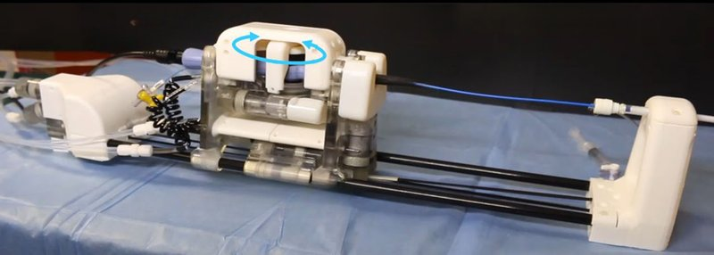

Academic bedside robots · hkumrsafe_lee2018
HKU MR-safe robot
HKU MR-safe hydraulic robotic manipulator for MRI-guided intracardiac (EP) catheterization

1 / 9


- Family
- Academic bedside robots (academic)
- Devices
- standard clinical EP ablation catheter (about 1.5 m, diameter < 3 mm) 2022: Thermocool Bi-Directional EP catheter (Biosense Webster), 8 Fr, about 2.67 mm (dong2022 Sec. II-A, IV-A).
- Degrees of freedom
- 4 in lee2018 (steering/bending, rotation, coarse insertion, fine insertion; lee2018 Table I); 3 (bending, rotation, insertion) in wang2018 Fig. 1 and dong2022 Fig. 6 caption
- Push
- Other drives
- Twist
- Other
- Tested up to
- Ex vivo
- Sim-to-real
- None found — No simulation-trained controller found for this robot.
Testing
- Highest level
- Ex vivo
- What was tested
- LA phantom ablation task, 127 targets (lee2018_mr Fig. 8); 10 subjects, model-based vs model-free in random order, 121 target spheres around the pulmonary vein ostium in a soft printed LA phantom (wang2018 Sec. "Simulated ablation task"); 2022: pulmonary vein isolation on a slice of swine tissue in a silicone LA phantom with pulsatile flow, 12 of 15 targets reached (80.0 %) (dong2022 Sec. V-B to V-F); in the 1.5 T scanner, marker tracking and feedback control with the LA phantom in a water container, no ablation reported in the scanner (dong2022 Sec. V-G)
- Key numbers
- ranges: steering +/-45 deg (0.063 deg), rotation +/-360 deg (0.504 deg), coarse 0-200 mm (0.115 mm), fine 0-30 mm (0.016 mm); about 10 m nylon pipelines 6/4 mm, distilled water <= 0.3 MPa; hysteresis 0.88-1.29 mm for 0.05-0.2 MPa preload; delay 45-66 ms at 15 Hz (lee2018_mr Table I, Sec. III); model-free vs model-based (10 subjects): tip-to-target distance 5.61 vs 6.94 mm (19.1 %, p = 0.08), missed targets 33.3 vs 51.9 % (35.8 %, p = 0.03), maximum continuously missed targets 46.2 % fewer (p = 0.01) (wang2018 Table 1); 2022: shape error 2.33 deg per FBG segment; position error 0.63 mm over 21 segments and 1.53 mm at the tip (max 2.27 mm); path following 0.62 mm mean (2.34 mm max) with the learning-based model vs 1.07 mm (4.27 mm) analytical; autonomous targeting 16.9 s per target (dong2022 Sec. V-A, V-B, V-D, V-E)
Mechanism
- Push (translation)
- other: master-slave hydraulic rolling-diaphragm actuators; coarse insertion through a transmission belt, fine insertion stage 2022: rolling-diaphragm three-cylinder actuation units for rotation and insertion (dong2022 Sec. IV-A, Table I).
- Twist (rotation)
- hydraulic rolling-diaphragm piston pair to gear (rotary) unit
- Device range
- clinically used EP catheters held in modular 3D-printed holders (lee2018); 2022 ranges: bending -60 to 60 deg at the catheter tip, rotation -360 to 360 deg, insertion 0-340 mm (dong2022 Table I)
- Target anatomy
- cardiac electrophysiology: left atrium, pulmonary vein isolation
Sensing and interface
- Force sensing
- none on the catheter; hydraulic force-transmission efficiency estimated 70%
- Leader and haptics
- Novint Falcon 3D haptic device with a Unity virtual endoscopic view (wang2018 Sec. "Robot control interface"); 2022: hydraulic master units driven by motors in the control room, no haptic leader described (dong2022 Sec. IV-A)
- Imaging
- MR safe: 1.5 T GE SIGNA, SNR loss < 2%, no artefacts; active MR tracking coils on the catheter 2022: tested in a 1.5 T GE SIGNA; 10 m nylon pipelines at 0.1 MPa (dong2022 Sec. V-G, Table I); MR tracking markers about 0.48 mm (Sec. II-C); the tip electrode causes an image artefact (Sec. V-G).
- Sterility
- disposable insertion guide (lee2018_mr Fig. 3a)
Size
- Footprint (mm)
- 780 x 105 x 210 (lee2018); 800 x 140 x 210 (2022 platform, dong2022 Table I)
- Mass (kg)
- 3.16 (whole slave body)
Simulation
- Simulation model
- none found
- Sim-trained controller
- none found (wang2018: the model-free controller updates its Jacobian online from EM data; dong2022: the network is trained on FBG data of the real catheter, Sec. III-B)
Versions
- Lineage
- 2018 MR-safe hydraulic manipulator (lee2018_mr, full); 2018 model-based (constant-curvature) vs model-free (Jacobian estimated online from EM tip data, no training) teleoperation with a Novint Falcon leader, 10 participants (wang2018_experimental, full); 2019 high-performance continuous hydraulic motor (dong2019_highperformance, title); 2022 upgraded 3-DoF platform with three-cylinder hydraulic actuation units, multicore FBG shape sensing, MR tracking markers and a learning-based piecewise-constant-curvature model; 800 x 140 x 210 mm, insertion 0-340 mm (dong2022_shape, full)
Sources
- MR Safe Robotic Manipulator for MRI-Guided Intracardiac Catheterization · IEEE/ASME Transactions on Mechatronics, 2018 · doi:10.1109/tmech.2018.2801787 [lee2018_mr]
- Experimental validation of robot-assisted cardiovascular catheterization: model-based versus model-free control · International Journal of Computer Assisted Radiology and Surgery, 2018 · doi:10.1007/s11548-018-1757-z [wang2018_experimental]
- High-Performance Continuous Hydraulic Motor for MR Safe Robotic Teleoperation · IEEE Robotics and Automation Letters, 2019 · doi:10.1109/lra.2019.2899189 [dong2019_highperformance]
- Shape Tracking and Feedback Control of Cardiac Catheter Using MRI-Guided Robotic Platform—Validation With Pulmonary Vein Isolation Simulator in MRI · IEEE Transactions on Robotics, 2022 · doi:10.1109/tro.2022.3154691 [dong2022_shape]
Notes
- Notes
- Corrects A2's gap note: HKU did build a complete catheter robot. dong2022_shape is CC BY 4.0 (printed on its p. 1), but its Fig. 6 slave photo carries labels and leader lines across the robot, so the picture is wang2018 Fig. 1. lee2018 counts 4 DoF (coarse + fine insertion), the 2018 IJCARS and 2022 papers 3.
This record
- Read level
- full — full (lee2018_mr, wang2018_experimental, dong2022_shape); title (dong2019_highperformance)
- Picture
- wang2018_experimental Fig. 1 (whole MR-safe slave robot on the bench), IJCARS 2018, doi:10.1007/s11548-018-1757-z; native embedded raster p. 3 ↗ — licence: publisher copyright; grade B
- Picture changes
- native extract (1417x506); no crop; LaMa erase of 6 boxes on plain background: text tags Bending, Rotation and EP catheter and the EP-catheter pointer (black curtain), the Insertion tag and double arrow (blue drape), and the white rotation arrow beside the rotation unit, which crossed the blue catheter (catheter line restored by the fill, checked at 100 %); the blue bending arrow on the top housing left in place (it lies on the mechanism); not upscaled
- Found by
- gap: Gap searches for robots the other searches missed.
- Data
- JSON · YAML:
records/robots/hkumrsafe_lee2018.yaml - Correction
- Suggest a correction [repository not created yet]